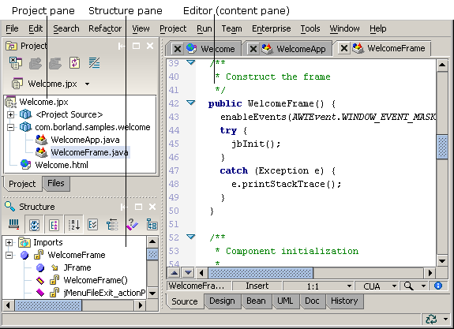

Features vary by JBuilder edition
The editor provides a feature-rich editing environment. It offers a variety of productivity features, such as keyboard shortcuts, customizable keymaps, and coding shortcuts and tools. The editor also offers customizable code templates, complex searching and identifying capabilities, bookmarking, tagging tools, and printing. The editor is fully customizable.
To edit your source code and text, double-click a file in the project pane to open it in the editor. A tab for the open file is displayed at the top of the content pane, making it easy to navigate between open files in a project.

Right-click anywhere in the editor, its gutter, and file tabs to view and choose from the various editing, searching, refactoring, optimizing tools, wizards, and display options.
Use the Preferences dialog box (Tools|Preferences|Editor) to customize the editing environment. You can control the following preferences:
For more information, see:
Getting Started with JBuilder: Working in the editor
Getting Started with JBuilder: Customizing the editor
Getting Started with JBuilder: Setting Editor preferences